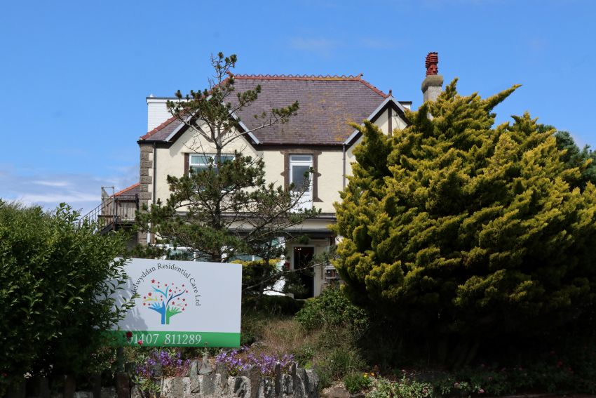
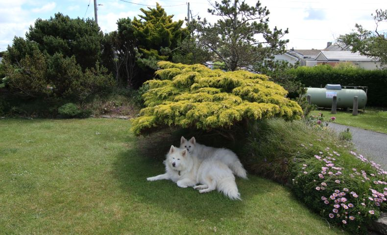
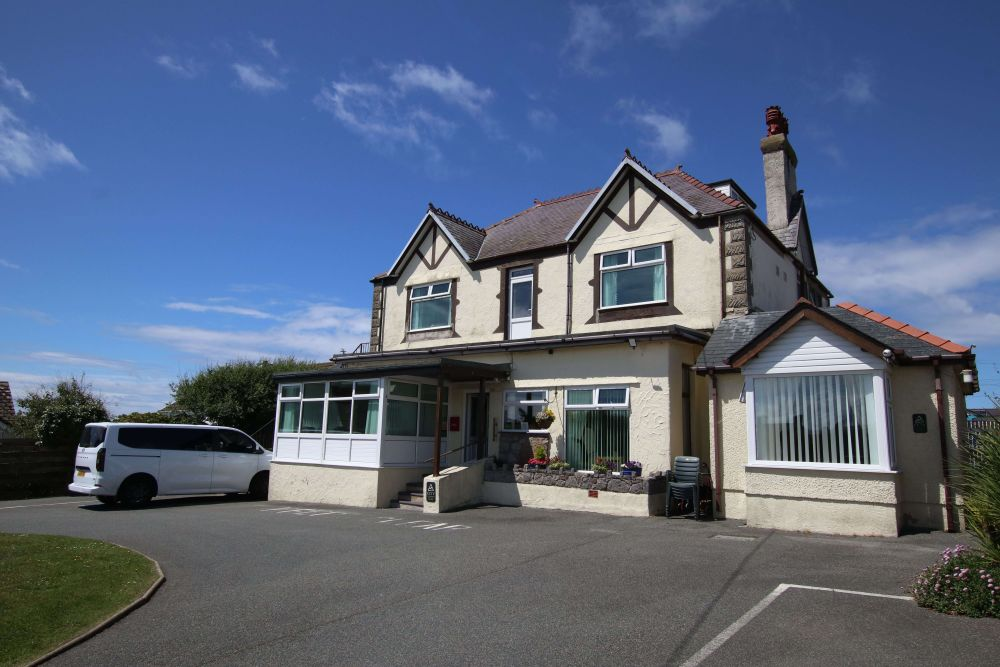
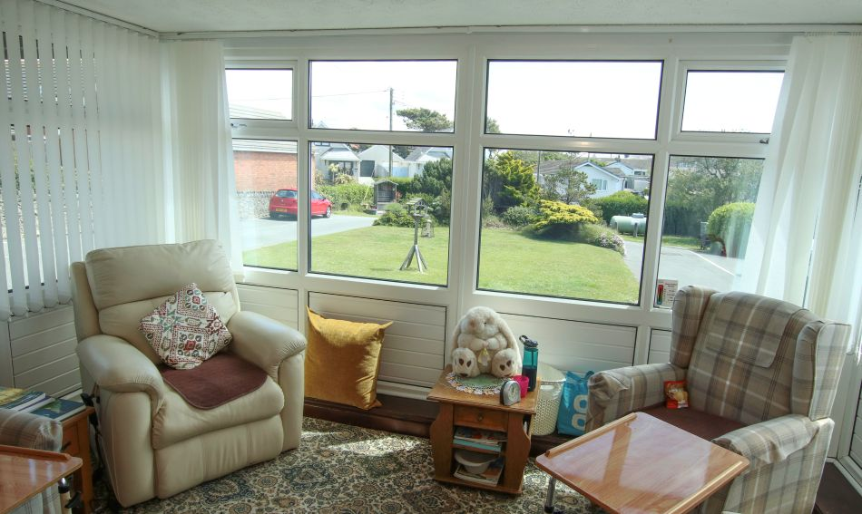

Safety in residential care
A warm, secure residential care home environment with practical support when residents need assistance.
About our residential care home in Rhosneigr
Bodelwyddan Residential Care provides warm elderly residential care in a calm home-like setting, helping families across Rhosneigr, Anglesey and North Wales find reassurance, comfort and personal day-to-day support for their loved one.
Why families choose our Rhosneigr care home
Choosing a residential care home can feel emotional and difficult. Bodelwyddan is intentionally small and homely, so families can feel that their loved one is supported by people who notice routines, preferences and the little details that help someone feel settled.



Our elderly care values
Our care is built around simple but important priorities: helping residents feel safe, warm, comfortable and treated with dignity. The home has 16 individual single bedrooms, many with en-suite facilities and TVs, with a call system in every room for assistance when needed.

A warm, secure residential care home environment with practical support when residents need assistance.
A homely atmosphere, familiar routines and everyday comfort that help residents feel more settled.
Each resident is treated as an individual with unique needs, preferences and personal history.
A small family-feel setting where care, comfort, food and communication matter every day.
Families can speak with the home directly about care needs, visits, availability and next steps.
Our story
Bodelwyddan is more than a care setting. It is a building with a story, a local reputation and a long connection to elderly care in Anglesey.
The building dates back to 1880 and was originally built for the local doctor.
Before becoming a care home, the building had also been used as a hotel and riding school.
The home has been run here since 26 April 2000, with a focus on warmth, safety and individual care.
With 16 single bedrooms, the home remains intentionally small, homely and easy for families to speak with.
We are based in Rhosneigr, Anglesey, close to Broad Beach, with parking and a garden area. Families looking for a care home near Holyhead, Llangefni, Bangor, Caernarfon or North Wales are welcome to contact us to talk through care needs and availability.

Rhosneigr, Anglesey
A small residential care home for elderly people, with individual rooms, practical facilities and a calm home-like setting.
For families comparing elderly care homes, residential homes near them or care homes in Anglesey, these are the everyday details that make Bodelwyddan feel different.
Residents are supported as individuals, with unique needs, routines and preferences.
Our care and cooking are well known locally, with a reputation built through word of mouth.
Many rooms include en-suite facilities and TVs, with a call system in every room.
Doctors, district nurses, social workers and community specialists work with us when needed.
Helpful answers
Quick answers for families researching residential care in Rhosneigr, Anglesey and North Wales.
Speak with us
Speak with Bodelwyddan Residential Care about availability, care needs, rooms and arranging a visit. Families can call, email or contact us online for the next step.